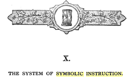

THE PEDALTO INSTITUTION FOR INCORPORATED ART

Bureaucratia necessitas non est, amor est
Department of Symbolic Instruction
Head Percy Galhour
Contact
Overview
/HE lectures of the English lodges, which are far more philosophical than our own, — although I do not believe that the system itself is in general as philosophically studied by our English brethren as by ourselves, — have beautifully defined Freemasonry to be " a science of morality veiled in allegory and illustrated by symbols." But allegory itself is nothing else but verbal symbolism ; it is the symbol of an idea, or of a series of ideas, not presented to the mind in an objective and visible form, but clothed in language, and exhibited in the form of a narrative. And therefore the English definition amounts, in fact, to this: that Freemasonry is a science of morality, developed and inculcated by the ancient method of symbolism. It is this peculiar character as a symbolic institution, this entire adoption of the method of instruction by symbolism, which gives its whole identity to Freemasonry, and has caused it to differ from every other association that the ingenuity of man has devised. It is this that has bestowed upon it that attractive form which has always secured the attachment of its disciples and its own perpetuity.
The Roman Catholic church * is, perhaps, the only contemporaneous institution which continues to cultivate, in any degree, the beautiful system of symbolism. But that which, in the Catholic, church, is, in a great measure, incidental, and the fruit of development, is, in Freemasonry, the very life-blood and soul of the institution, born with it at its birth, or, rather, the germ from which the tree has sprung, and still giving it support, nourishment, and even existence. Withdraw from Freemasonry its symbolism, and you take from the body its soul, leaving behind nothing but a lifeless mass of effete matter, fitted only for a rapid decay.
Since, then, the science of symbolism forms so important a part of the system of Freemasonry, it will be well to commence any discussion of that subject by an investigation of the nature of symbols in general.
There is no science so ancient as that of symbolism,f and no mode of instruction has ever been so general as
* Bishop England, in his " Explanation of the Mass," says that in every ceremony we must look for three meanings : " the first, the literal, natural, and, it may be said, the original meaning; the second, the figurative or emblematic signification; and thirdly, the pious or religious meaning: frequently the two last will be found the same; sometimes all three will be found combined." Here lies the true difference between the symbolism of the church and that of Masonry. In the former, the symbolic meaning was an afterthought applied to the original, literal one; in the latter, the symbolic was always the original signification of every ceremony.

